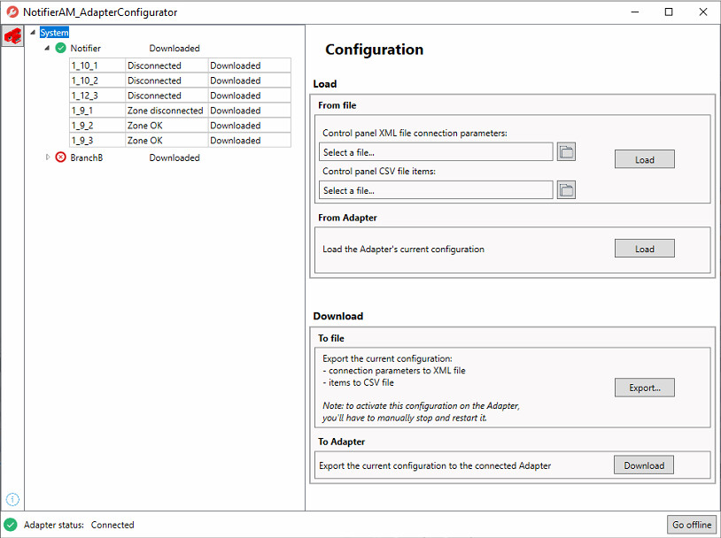

Notifier AM Configuration
To reach all connected Notifier AM control panels and their connected items, the Notifier AM adapter requires the configuration parameters included in the following files:
- CEIProtocolConfiguration.xml. This is a text file describing data in Extensible Markup Language. It contains the configuration parameters to allow the adapter to reach and connect to the Notifier AM control panels.
One XML file per adapter is used. Each file can be used to manage up to 255 branches of same panels or different panels to communicate parameters data. - CEIConfiguration.csv. This is a text file containing comma separated values. It contains the configuration of all the objects configured for each Notifier AM control panel.
One CSV file per adapter is used. This file is automatically generated by the adapter. When the adapter starts up, the data of the items connected to the Notifier AM control panel is retrieved.
CSV File Data | ||
Data | Description | |
ID_BRANCH | Identifier of the branch in the SORISCEI system. | |
OBJECT_TYPE | Type of object. | |
| ID | Description |
| 9 | Zone |
| 10 | Sensor |
| 12 | Output |
OBJECT_ID | Progressive index of element (starting from 1). | |
CC_FunctionName | Function name. | |
Name | Point name. | |
PARENT_ZONE | Connection parent-child among the element classes. | |
Notifier AM Configurator Tool
To configure the Notifier AM adapter you will use the Notifier AM configurator tool to:
- Perform online engineering, by retrieving the online field data, setting the items, and overriding the online configuration data with this configuration.
- Perform offline engineering, by loading the configuration from the CSV file and, overwriting the existing CSV file with the new configuration.
- Create the control panel configuration from scratch and exporting it to a CSV file.
- Test the connection.
- Acknowledge the control panel from the configuration tool.
